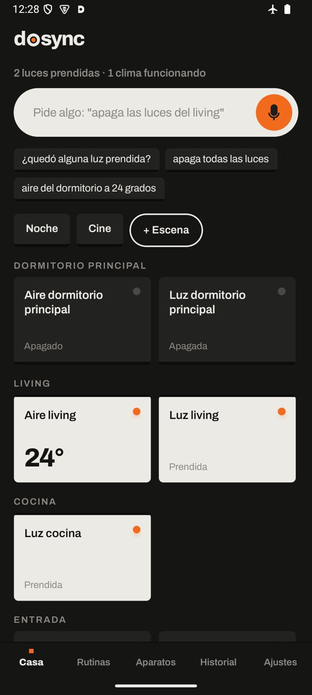

Tu casa, en tus palabras.
Your home, in your own words.
DoSync App es una app gratis para Android que maneja luces, aires, teles, cerraduras y electrodomésticos diciendo lo que quieres. El teléfono es el hub: no hay que comprar otro aparato ni crear una cuenta nuestra.
DoSync App is a free Android app that runs your lights, ACs, TVs, locks and appliances by saying what you want. Your phone is the hub: no extra device to buy, no account of ours to create.
Gratis. Con IA opcional: la tuya (Claude, Gemini o ChatGPT), Gemini Nano en el teléfono, o gratis con Ollama en tu computadora.
Free. Optional AI: your own (Claude, Gemini or ChatGPT), on-device Gemini Nano, or free with Ollama on your computer.

Está en beta, y tu opinión vale oro
La app ya funciona en casas reales, pero la seguimos probando con muchas marcas y aparatos: puede haber errores, y algunas marcas están probadas solo con simuladores. Cualquier opinión se agradece muchísimo: lo que funcionó, lo que no, y lo que te gustaría que haga. Cómo contarnos.
It's a beta, and your feedback is gold
The app already works in real homes, but we're still testing it with many brands and devices: expect rough edges, and some brands are tested only against simulators. Any feedback is truly appreciated: what worked, what didn't, and what you'd like it to do. How to tell us.
Un asistente de verdad para la casa
A real assistant for the home
Cada marca trae su app, y la casa termina repartida en diez. DoSync junta todo en un solo lugar y lo maneja con lenguaje común. Detrás está el protocolo abierto DoSync: la IA propone, y las reglas de la casa deciden qué se hace y qué espera tu confirmación.
Every brand ships its own app, and the home ends up split across ten of them. DoSync brings it all together and runs it in plain language. Underneath is the open DoSync protocol: the AI proposes, and the home's rules decide what runs and what waits for your confirmation.
Dile lo que quieres
Say what you want
apagá todas las lucesponé el aire a 24 Entiende 6 idiomas en el teléfono, gratis y sin IA.
turn off all the lightsset the AC to 24 Understands 6 languages on the phone, free and without AI.
Lo complejo, con IA
The complex, with AI
poné el último video de Luisito Comunica Busca en internet, encadena pasos, programa temporizadores y reglas. Con tu clave, o gratis con Ollama en tu computadora: tus órdenes no salen de tu casa.
play that channel's latest video on the TV Searches the web, chains steps, schedules timers and rules. With your own key, or free with Ollama on your computer: your commands never leave your home.
Solo, aunque cierres la app
On its own, even with the app closed
Escenas y rutinas a una hora, al llegar o irte de casa, o cuando algo cambia: si pasa de 28°, prendé el aire
Scenes and routines at a time, when you arrive or leave, or when something changes: if it's above 28°, turn on the AC
Encuentra tus aparatos
Finds your devices
Busca en tu WiFi y por Bluetooth, y una guía por marca te dice qué hacer en cada caso.
Scans your Wi-Fi and Bluetooth, and a per-brand guide tells you what to do in each case.
También lo viejo
Older gear too
Aires y teles con control remoto, con el emisor infrarrojo del teléfono o un Broadlink: cientos de modelos.
ACs and TVs with a remote, through the phone's IR blaster or a Broadlink: hundreds of models.
Lo delicado, con permiso
Sensitive things ask first
Abrir una cerradura o el portón, prender un horno: siempre esperan tu confirmación, venga la orden de donde venga.
Unlocking a door, opening the gate, turning on an oven: always wait for your confirmation, wherever the command came from.
Simple a propósito
Simple on purpose



Miles de dispositivos, en América y Europa
Thousands of devices, across the Americas and Europe
Muchas por tu WiFi, sin internet; otras con la cuenta de la marca. La guía de la app muestra primero las más comunes en tu país.
Many over your Wi-Fi, without internet; others through the brand's account. The in-app guide shows the most common brands in your country first.
Luces y enchufes
Lights and plugs
Philips Hue · WiZ · TP-Link Kasa / Tapo · Shelly · Sonoff · Tasmota · Yeelight · Govee · LIFX · Nanoleaf · Tuya / Smart Life · Belkin Wemo · IKEA · deCONZ
Teles y audio
TVs and audio
Samsung · LG · Philips · Android TV / Google TV · Fire TV · Roku · Vizio · Chromecast · Sonos · Denon / Marantz · Yamaha · Onkyo
Clima
Climate
Aires con control remotoACs with a remote · Gree · Daikin · tado° · Netatmo · Google Nest · Bosch Smart Home · Homematic · FRITZ!DECT
Electrodomésticos
Appliances
Bosch / Siemens (Home Connect) · Electrolux / AEG · Miele · LG ThinQ · Samsung SmartThings · Roomba · Xiaomi
Puertas y persianas
Doors and blinds
Nuki · Tedee · Somfy TaHoma · Hunter Douglas PowerView · Legrand / BTicino · SwitchBot
Y todo lo de tu sistema
Plus your own system
Home Assistant · Zigbee2MQTT · SmartThings · ESPHome
Cómo probarla
How to try it
Bájala de GitHub
Get it from GitHub
En la última versión, baja DoSync-x.y.z.apk en tu Android (8.0 o más nuevo) y ábrelo. Te va a pedir permiso para instalar desde ese origen.
From the latest version, download DoSync-x.y.z.apk on your Android phone (8.0 or newer) and open it. It will ask permission to install from that source.
O únete en Google Play
Or join on Google Play
Con la misma cuenta de Google de tu teléfono, en este orden:
With your phone's Google account, in this order:
- Únete al grupo de testersJoin the testers group ↗
- Acepta la pruebaAccept the test ↗
- Instálala desde Google PlayInstall it from Google Play ↗
Se actualiza sola. Si ya la tienes desde GitHub, haz un respaldo en Ajustes y desinstálala antes (están firmadas distinto).
It updates itself. If you installed it from GitHub, make a backup in Settings and uninstall it first (they're signed differently).
Agrega tu casa
Add your home
Toca "Buscar en mi WiFi", o elige tu marca en la guía. Después escribe o dicta lo que quieras.
Tap "Search my Wi-Fi", or pick your brand in the guide. Then type or say what you want.
Cuéntanos cómo te fue
Tell us how it went
Es una beta: lo que nos cuentes define qué marcas se suman y qué se mejora primero. Gracias por tomarte el tiempo.
It's a beta: what you tell us decides which brands come next and what gets fixed first. Thanks for taking the time.
En GitHub
On GitHub
Sin GitHub
Without GitHub
- rgiuliani@dosync.dev
- Desde la app: Ajustes → reportar una respuesta rara de la IA.
- From the app: Settings → report an odd AI answer.
- Para no compartir de más: no incluyas contraseñas, claves ni tu dirección.
- Please don't include passwords, keys or your address.
Tus datos se quedan en tu teléfono
Your data stays on your phone
DoSync no tiene servidores que reciban tus datos ni crea cuentas. Las claves de tus aparatos y cuentas quedan cifradas en el teléfono, y casi todo funciona por tu WiFi, sin internet. Política de privacidad.
DoSync has no servers that receive your data and creates no accounts. Your device and account keys are encrypted on the phone, and most things work over your Wi-Fi, without internet. Privacy policy.